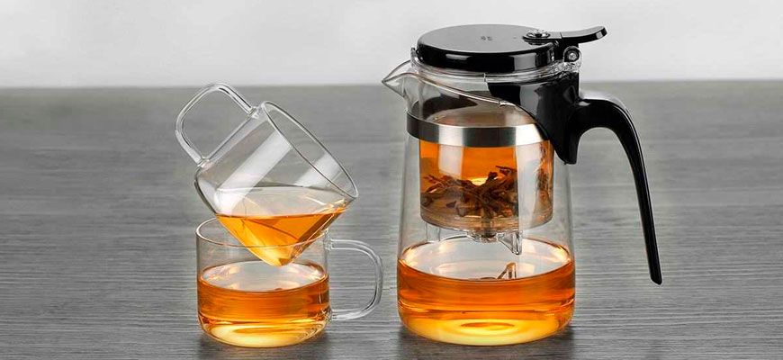

Чайники Гунфу
Заварочный чайник гунфу (типот) - современный высокотехнологичный вариант заварочного чайника. Он состоит из основной емкости, выполненной из жаропрочного стекла и заварочной колбы, в которую встроен механизм фильтрации и слива. Общий принцип действия всех гунфу: заваривание чая происходит в колбе, после чего по нажатию кнопки напиток через фильтр сливается в основную емкость, а чайные листья остаются в колбе.Он настолько удобен, что его покупают не только для дома, но и для офиса.
Три преимущества чайников гунфу
- удобно контролировать время заваривания, сливая напиток в нужный момент;
- вы получаете 3 функции в одном устройстве: чайник, фильтр, чахай;
- все части можно мыть в посудомоечной машине.
Типод с кнопкой: на что стоит обратить внимание
Производители лучших заварочных чайников с кнопкой - китайские фабрики Kamjove и Samadoyo. Эти модели стоят дороже остальных, но их качество и надежность значительно выше чем у конкурентов. Они имеют ряд общих особенностей:
- Заварочные колбы чайников гунфу у всех производителей выполнены не из стекла, а из пищевого термостойкого пластика. Это связано с технологией их производства и абсолютно не сказывается на качестве напитка. Их объем обычно составляет 200-300 мл;
- В зависимости от модели чайника механизм фильтра может быть разборным или не разборным, а крепление колбы - жестким или свободным.
Как заваривать чай в гунфу?
В верхнюю колбу насыпается заварка (любая, кроме мелкого порошка) и заливается водой нужной температуры (мы помним, что для каждого чая она своя).Спустя несколько секунд нажатием на кнопку полученный настой сливается в нижнюю емкость, откуда его легко можно разлить по чашкам. Чайный лист в верхней колбе остается «сухим» и готовым к следующей заварке. Специалисты рекомендуют настаивать каждую порцию заварки сообразно сорту чая (для зеленого счет идет на секунды, черный может выдерживать и до 3-4 минут).
| Сорт чая | Температура(гр.) |
|---|---|
| Пуэр и черные чаи | 90-100 |
| Улун, матэ, ройбош | 80-90 |
| Желтые сорта | 70-80 |
| Белый чай | 60-70 |
Понятие «чай как искусство» означает, что процесс возделывания, сбора, приготовления и отбора чая следует считать эстетическим наслаждением, таким же, какое мы испытываем, читая прекрасные стихи или слушая великолепную музыку. Для китайцев чай является воплощением духа Вселенной. Когда чай попадает в ваш организм, вас наполняет энергия солнца, луны и земли и всех чудес света.
Купить чайники Гунфу от лучших производителей Вы можете в интрнет-магазине 101tea.ru.